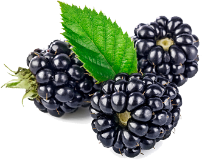

I company – це надання професійних, інформаційно-консультаційних послуг у сфері ягідництва кваліфікованими спеціалістами з багаторічним практичним досвідом.
Мета – допомогти виробникам ягідної продукції отримувати стабільний очікуваний результат від діяльності за допомогою правильного планування, прогнозування, організації та виконання необхідних процесів у виробництві.